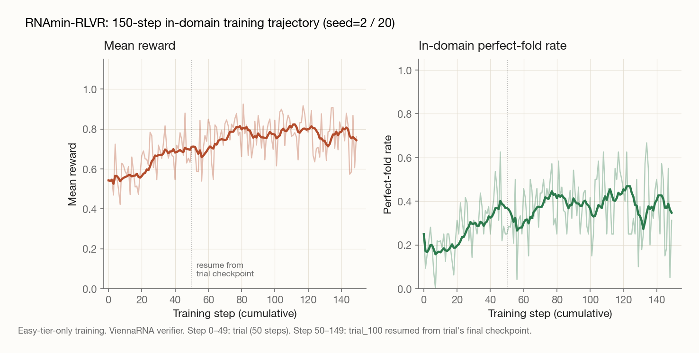

Testing whether RLVR's structural recipe transfers to a domain with effectively zero pretraining overlap.
Ryan Clark · April 2026
TL;DR
I trained Qwen3-4B-Instruct with GRPO to design RNA sequences that fold into target dot-bracket structures, using ViennaRNA as a fast verifier. The in-domain headline is mean structural match 72.9% → 92.7% (perfect-solve rate 30% → 52% as the binary check). Cross-domain, the same checkpoint degraded GPQA Diamond by −4.1pp, the opposite sign of what a matched BoolMin-RLVR run produced (+3.5). Same algorithm, same model, same training budget; the choice of task seems to matter more than the existence of a verifier. n=1 seed per condition; see limitations.
Benchmark
Base
RNA-trained
BoolMin-trained
GPQA Diamond
48.0%
43.9% (−4.1)
51.5% (+3.5)
MATH-500
91.0%
91.2% (+0.2)
90.4% (−0.6)
IFEval (strict)
84.5%
83.0% (−1.5)
84.1% (−0.4)
IFEval (loose)
87.8%
87.1% (−0.7)
87.2% (−0.6)
Matched-pair zero-shot evaluation. Same base model (Qwen3-4B-Instruct-2507), same algorithm (GRPO via Tinker), same hyperparameters, matched training budget (~150 / ~250 steps; ~$11–15 each). Only the training task varies. n=1 seed per condition.
The question
RLVR (reinforcement learning with verifiable rewards) has worked best when the verifier is fast and the task is far from contaminated pretraining data. The existing literature (math reasoning, classical NP problems, code unit tests) clusters in one neighborhood of "discrete CS-flavored problems." It's worth asking whether that neighborhood is doing the work for the method, or incidental.
RNA inverse folding is unusually well-suited as a test:
Verification is fast. ViennaRNA's RNAfold evaluates a 100nt sequence in single-digit milliseconds via a well-maintained C library. No LP solver, no simulation, no judge model.
Verification is cheap to express. The task takes a dot-bracket target structure and produces an A/U/G/C sequence; checking is one library call.
The task is inverse design, not optimization. Unlike "minimize this objective," there's no monotonic reward gradient. Most sequences fold into something totally different from the target.
Pretraining overlap is plausibly close to zero. Dot-bracket → nucleotide-sequence mappings are not standard ML content. The model is unlikely to have memorized any of it.
If RLVR produces meaningful in-domain learning on RNA inverse folding, that's a signal that task structure (inverse design + fast verifier) matters more than task content (math, code, biology). If it doesn't, that's evidence the existing successes lean on domain-specific pretraining priors more than the field admits.
Task design
The model receives a target secondary structure in dot-bracket notation and must output an RNA sequence whose minimum-free-energy fold matches it:
Verification folds the output with ViennaRNA at the default temperature and computes a position-by-position match against the target structure. The reward function is layered to give useful gradient on the typical rollout, where most early outputs fold into something unrelated:
Reward tier
Condition
Value
Format bonus
Parseable output extracted
0.05
Stepping-stone
Correct length + valid A/U/G/C alphabet
0.15
Partial match
≥80% positional match (threshold)
match_frac × 0.9
Perfect match
Exact structural match
1.0 + stability bonus (≤0.1)
The 80% positional-match threshold is deliberate: RNA folding is cooperative, so a sequence whose fold matches at 60% of positions isn't "60% correct"; it's essentially random and a different molecule. The stepping-stone reward for length-and-alphabet correctness was essential: without it, ~75% of early rollouts scored 0 and offered no gradient signal.
Difficulty tiers and data
Tier
Length
Max depth
Typical structure
Easy
20–35 nt
1–2
Single hairpin or simple stem-loop
Medium
35–60 nt
2–3
2–3 stem-loops, possible internal loops
Hard
60–100 nt
3–4
Multi-branch loops, long-range pairing
Expert
100–150 nt
4+
Multiple folded domains (eval only)
Structures are generated on-the-fly by a recursive descent grammar that enforces the biological constraints that matter for foldability: minimum hairpin loop size of 3 nucleotides, minimum stem length of 3 base pairs, balanced parentheses. The evaluation set is two fixed benchmarks: an in-house 400-instance suite (100 per tier through hard) and a 100-instance subset of community Eterna puzzles.
Training setup
Model: Qwen3-4B-Instruct-2507 (chosen to fit the budget; the instruct base slightly weakens the "RLVR improves reasoning from scratch" framing but doesn't affect the in-domain learning claim).
Algorithm: GRPO via the Tinker SDK, following the same recipe as DeepSeek-R1 and NP-Engine.
Steps: 150 total (50-step trial on easy tier, then a 100-step continuation from that checkpoint). The full 3,500-step curriculum design (easy → easy+medium → all tiers) is in the experiment doc; the 150-step run was the executed pilot.
Total spend: ~$11 for training, separately ~$15 for the in-domain and cross-domain evals.
Verification: ViennaRNA via the Python bindings, called per rollout with a 30s timeout.
Results
Evaluated on a 100-instance held-out test set drawn from RNA-Eval:
Metric
Base (Qwen3-4B-Instruct)
After RLVR
Δ
Perfect solve rate
30%
52%
+22 pp
Sequence validity rate
56%
57%
+1 pp
Parseable rate
92%
98%
+6 pp
Mean structural match
72.9%
92.7%
+19.8 pp
Mean reward
0.608
0.845
+0.237

150-step in-domain trajectory composed from the trial (steps 0–49) and trial_100 (steps 50–149) logs. Light traces are per-step values; bold lines are 10-step rolling averages. Mean reward climbs cleanly; the perfect-fold rate is noisier per-step (cooperative folding is high-variance), but the rolling average shows the climb that ends at the 52% headline on the held-out eval set.
A few observations are worth pulling out:
The mean match climb (72.9% → 92.7%) tells a different story than the perfect-solve rate. The model learned to produce sequences that fold close to the target, even when not exact. That's a real shift in capability, not an artifact of the threshold.
Sequence validity didn't budge. Both before and after, ~57% of attempts produce a sequence of correct length over the A/U/G/C alphabet. RLVR taught the model to design structurally accurate folds when it generates a valid candidate, not to generate valid candidates more often. That's a useful diagnostic for where future-work effort should go.
Parse rate climbed to 98%. The model learned the output format faster than it learned the task. That's a consistent finding across RLVR work and a reminder that "verifiable" includes the format gate.
Cross-domain evaluation
The motivating question (does RLVR on a maximally out-of-distribution domain transfer to general reasoning?) needs the trained checkpoint to be evaluated on standard benchmarks. The same 150-step RNA-trained checkpoint was run zero-shot against the suite I use for the matched BoolMin-RLVR experiment:
Benchmark
Base
RNA-trained
Δ
MATH-500
91.0%
91.2%
+0.2 (flat)
GPQA Diamond
48.0%
43.9%
−4.1
IFEval (strict)
84.5%
83.0%
−1.5
IFEval (loose)
87.8%
87.1%
−0.7
Graduate-level science reasoning degrades by 4.1 points; instruction-following degrades modestly; math is flat. This is the opposite sign of what the parallel BoolMin-RLVR run produced on the same base model with the same algorithm (BoolMin: GPQA +3.5). Two RLVR runs, both with strong in-domain learning, both with fast verifiers, opposite transfer signs.
What the RNA result actually says. The straightforward reading is that RLVR's structural properties (fast verifier, exploration, partial reward) don't automatically produce reasoning transfer. The choice of task domain interacts with what the model generalizes to. Boolean logic seems to share something with GPQA-style reasoning (constraint satisfaction, compositional structure) that RNA secondary-structure design doesn't. Disentangling whether that's about task content or about what the model spends rollouts doing is the natural next experiment; see the BoolMin writeup for that thread.
What this contributes
Two things, with different confidence levels.
The strong claim, well-supported by the data: RLVR works on a domain with effectively zero pretraining overlap. In-domain learning is substantial (+22pp perfect solve, +19.8pp mean match) over a 150-step, ~$11 training budget. The reward design (layered stepping-stone → threshold → exact) and the format-robust verifier are reusable patterns for any inverse-design task where most rollouts miss the target.
The weaker, more interesting claim, supported by the comparison with BoolMin: task choice is load-bearing for reasoning transfer. Same model, same algorithm, matched training budget. One task transfers positively to graduate-level science reasoning, the other transfers negatively. Whichever direction the field eventually lands on, "find any task with a fast verifier" is too coarse a recipe.
Two methodological pieces are worth keeping:
The layered reward design. A binary reward on perfect-fold would have produced near-zero gradient through the early phase of training; the stepping-stone tier (length + alphabet) and the threshold-based partial credit (≥80% match) keep the signal informative without rewarding noise. I'd expect this layout to generalize to any inverse-design task where most candidates miss completely.
The output-format robustness in the verifier. The parser handles three output formats (echo-back, contiguous, and a regex fallback for the longest A/U/G/C stretch). This sounds boring but matters: it cleanly separates "the model didn't learn the task" from "the model produced a sequence in a format the verifier didn't recognize," and it kept early-training rollouts from being penalized for format quirks.
Limitations and scope
The instruct base. Qwen3-4B-Instruct has already been through RL-flavored instruction tuning, so this isn't a clean "RLVR from a base model" demonstration. The in-domain results are unaffected (the model clearly couldn't design RNA sequences before), but a claim like "this is what RLVR alone produces" would need a pure base model.
Single seed, no error bars. The 30% → 52% improvement is a point estimate on 100 test instances. Variance on a benchmark that size is non-trivial; multi-seed runs are the right way to firm up the claim.
Single cross-domain evaluation point. The −4.1 on GPQA comes from the 150-step endpoint only. The matched BoolMin experiment has cross-domain evals at step 50 and 250, which is what lets it argue against sampling noise from monotonicity. The RNA story would benefit from the same; without a step-50 cross-domain checkpoint, I can't distinguish "the negative grew with training" from "−4.1 was always the level." The 50-step RNA checkpoint exists (tinker://ddd3cc05…); running the cross-domain eval against it is the cheapest tightener.
Hard-tier ceiling. Improvements concentrate in easy and medium tiers; hard-tier instances (60–100nt, depth 3–4) remain mostly out of reach for a 4B model.
Validity rate didn't move. The model still fails to produce a valid candidate ~43% of the time. That's a different bottleneck from structural accuracy and would need a different reward shaping (or a longer training run) to address.
Future work
Disentangle task content from task structure. The BoolMin/RNA contrast is the most scientifically interesting finding here, and it's currently a comparison of two specific tasks. A shuffled-truth-table control on BoolMin (verifier accepts anything matching the output format) tests whether the algorithm or the task is doing the work. If GPQA still moves on the shuffled control, the structure was the active ingredient; if it doesn't, task content was. Either result is informative.
Multi-seed replication of the cross-domain numbers. The −4.1 on GPQA is a single-seed point estimate on a 198-instance benchmark. Sampling noise at 50% accuracy gives a standard error around ±3.5pp, so one additional seed at the 150-step checkpoint would tell us whether the negative transfer is robust or whether it sits inside the noise floor.
Full curriculum execution. The 3,500-step main run with the 3-phase curriculum is configured but only the 150-step easy-tier pilot has run. Whether hard-tier exposure changes either the in-domain ceiling or the cross-domain sign is open.
Validity-rate reward shaping. Sequence-validity rate didn't move from 56% → 57% — the model still fails to produce a valid candidate ~43% of the time. A 2×2 ablation on stepping-stone weight × threshold strictness would identify whether reward shaping or training scale is the bottleneck.
Comparison to a domain-specific RNA design model. ViennaRNA's RNAinverse and modern tools like RNAiFold provide a strong baseline; the gap (or overlap) is informative for whether this LLM is doing something a specialized solver couldn't.